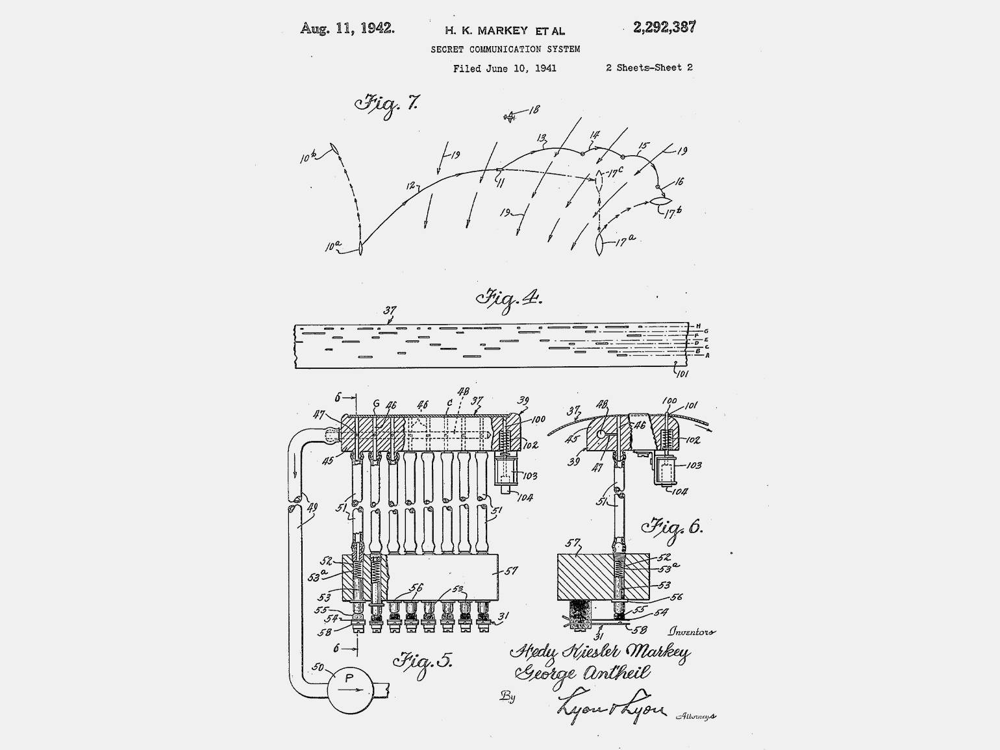

Основные достижения
Изобретательская деятельность
Помимо кино, Хеди Ламарр была успешна в изобретательской деятельности. В 1942 году она изобрела и совместно с Джорджем Антейлом запатентовала систему, позволяющую дистанционно управлять торпедами. Технология «прыгающих частот» была оценена лишь много лет спустя. День рождения актрисы — 9 ноября — назван Днём изобретателя в немецкоговорящих странах.
Толчком к изобретению послужило сообщение о потопленном 17 сентября 1940 года эвакуационном корабле, на котором погибло семьдесят семь детей. Незаурядные способности Ламарр в точных науках позволили ей применить и переработать для своих исследований технические детали разговоров об оружии, которые вёл её первый муж со своими коллегами. Желая дать своей стране военное преимущество, вместе со своим другом, авангардистским композитором Джорджем Антейлом, жившим неподалёку, Хеди Ламарр приступила к изобретению радиоуправляемой торпеды, которую нельзя будет перехватить или заглушить. У нее возникла идея: если дистанционно сообщать координаты цели управляемой торпеде по одной частоте, то враг может легко перехватить сигнал, заглушить его или перенаправить торпеду на другую цель, а если использовать на передатчике случайный код, который будет менять канал передачи, то можно синхронизировать такие же частотные переходы и на приёмнике. Такая смена каналов связи гарантирует безопасную передачу информации. До того времени псевдослучайные коды использовались для шифровки информации, передаваемой по неменяющимся открытым каналам связи. Здесь же был сделан шаг вперёд: секретный ключ стал использоваться для быстрого изменения каналов передачи информации.
В августе 1942 года Ламарр и Антейл получили патент на изобретение «Системы секретной связи» (англ. Secret Communication System), зарегистрированный под номером US2292387A. Патент, сроком действия до 1955 года, описывает секретные системы связи, включающие передачу ложных каналов на разных частотах. Однако американский флот тогда отверг этот проект из-за сложности реализации; ограниченно использовать его начали лишь в 1962 году, и, таким образом, отчислений за него изобретатели не получили.
В 1997 году Хеди Ламарр была официально награждена за своё изобретение, но актриса не присутствовала на церемонии и лишь передала аудиозапись своего приветственного слова.
В начале 2014 года Хеди Ламарр была внесена в Национальный зал славы изобретателей США.
